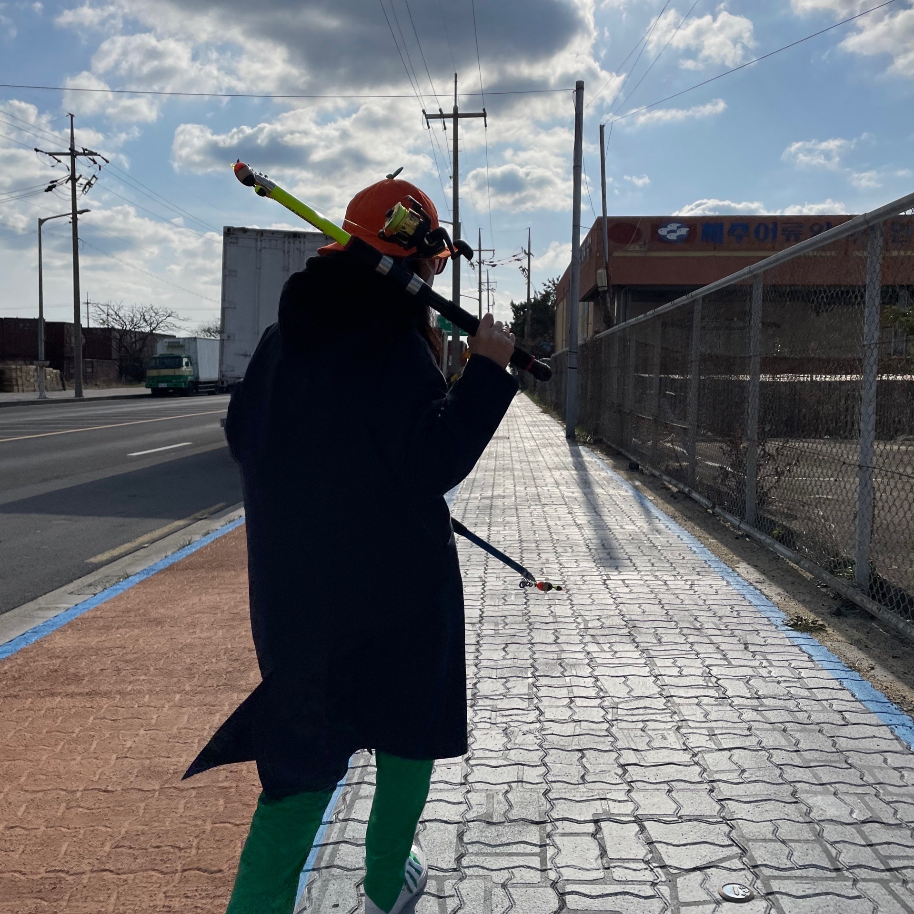
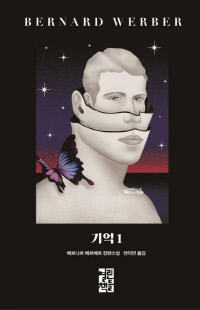
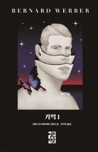

안녕하세요!
저는 바이오의공학부 20학번 김채현이라고 합니다.

- 3학년 1학기 재학중입니다
- 인공지능 융합전공 하고 있습니다
- 멋쟁이사자처럼 10기가 되어버렸습니다
좋아하는 것
영화
- 공포 영화 빼고 다 좋아합니다
- 어두운 영화를 좋아합니다
- 하지만 밝은 영화도 좋아합니다
음악
- 버스랑 지하철 탈 때 노래를 듣습니다
- ImagneDragons 좋아합니다
- 근데 장르를 가리지 않고 마음에 들면 좋아합니다
책
 

|
- 책도 장르 가리지 않고 읽습니다
- 베르나르 베르베르 책이 재미있습니다
- 베르나르 아저씨의 '나무' 책이 가장 재미있습니다
- 요즘에는 기억 1권을 읽고 있습니다
- 자기계발서도 읽어보기 시작했습니다
운동
- 밤에 자전거 타는거 아주 좋아합니다
- 12시쯤에 나가면 사람이 없어서 최고입니다
- 새벽에 일찍 일어나서 자전거 타고싶지만 늦잠을 잡니다
- 복싱장은 개강하고 바빠서 못 가고 있어 아쉽습니다
청소
- 스트레스 받으면 방바닥을 닦습니다
- 주말에 이불털고 방정리 하면 기분이 좋아집니다
일기
- 자기 전에 일기를 쓰면 생각이 정리되는 것 같아 좋습니다
노트북
- 고2때부터 그램을 쓰고 있습니다
- 근데 점점 맛이 가고 있습니다
- 멋사 세션에 가보니 다들 맥북을 쓰셔서 맥북이 사고 싶어졌습니다